Explore Turin
A Brief History
Turin served as the first capital of unified Italy in 1861 and long capital of the House of Savoy. Baroque squares, royal palaces, and the Egyptian Museum reflect ducal patronage and industrial investment by Fiat and other manufacturers. The Mole Antonelliana and Alpine views mark a city that linked Piedmont to French and Swiss trade routes. Municipal archives, parish records, and surviving architecture help explain how the city connected to wider regional trade routes, court patronage, and modern civic rebuilding after industrial and wartime change.
Attractions Map
Top Sights & Activities
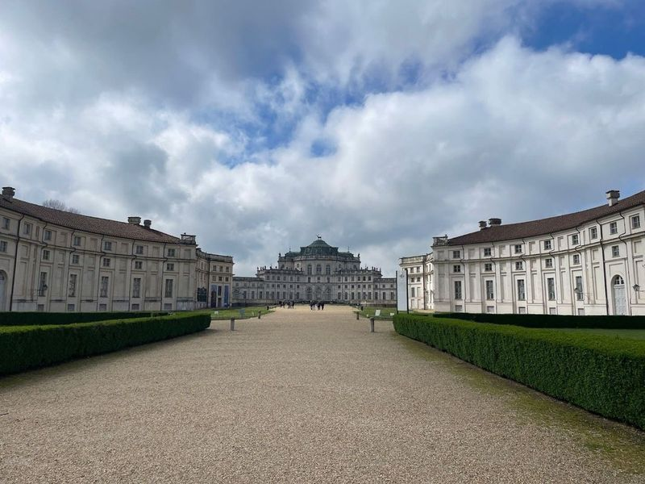
Palazzina di Caccia di Stupinigi
Palazzina di Caccia di Stupinigi is an exquisite 18th-century hunting lodge and royal residence located near Turin. Its grand gardens and luxurious apartments are a testament to European Baroque architecture. The lodge features a unique plan in the shape of a Sant'Andrea cross, with a central elliptical salon adorned with depictions of deer, symbolizing the Savoy's hunting traditions.
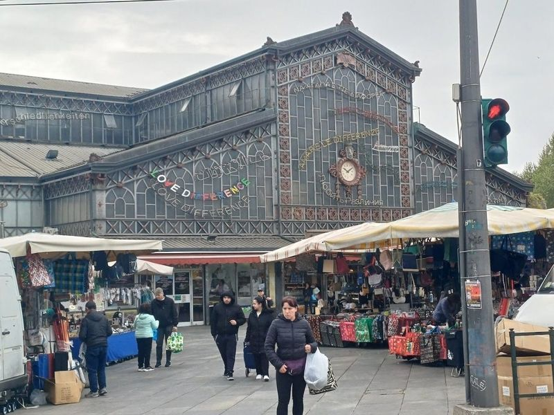
Porta Palazzo
Porta Palazzo, also known as Piazza della Repubblica, is the largest open-air market in Europe located in Turin. It offers a vibrant mix of Italian and foreign traditions with a wide range of products including produce, flowers, apparel, and art. The market reflects the multiethnic nature of the city and is home to various associations and LGBT groups. Additionally, it hosts events like La Madre for the LGBTQ+ community and Casa Arcobaleno which offers cultural activities.
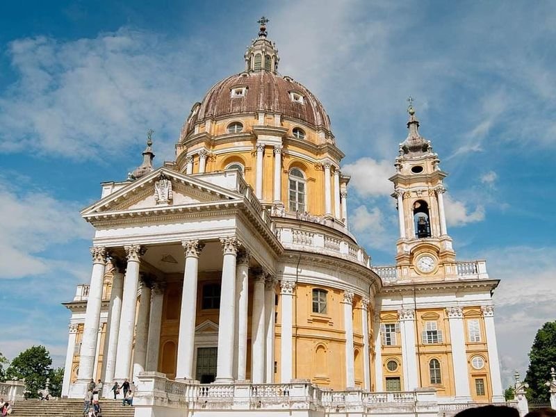
Basilica of Superga
Perched atop Superga hill, the Basilica of Superga is a magnificent baroque church with a commanding dome that offers views of the Alpine surroundings. Designed by renowned architect Filippo Juvarra in the early 18th century, this grand basilica replaced an existing church and holds great historical significance as it serves as the burial site for the royal House of Savoy.
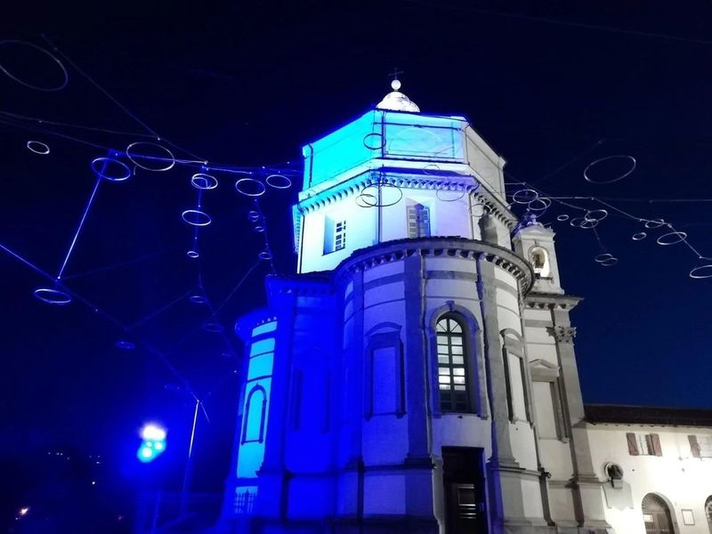
Chiesa di Santa Maria del Monte dei Cappuccini
Chiesa di Santa Maria del Monte dei Cappuccini is a 16th-century church located on the picturesque Monte dei Cappuccini, a hill standing at 325 meters high near the Po River in Turin. The hill offers panoramic views of the city, river, and sunsets. It's conveniently close to the historic center and can be reached by crossing the Vittorio Emanuele Bridge.
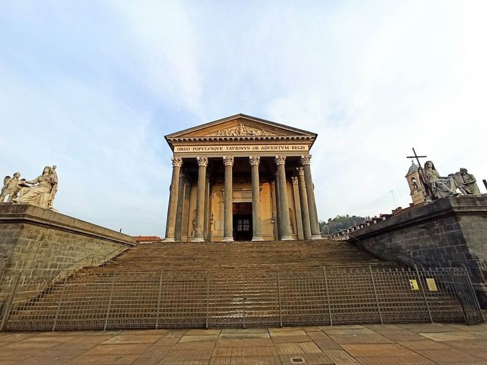
Chiesa Parrocchiale della Gran Madre di Dio
Nestled along the banks of the Po River in Turin, the Chiesa Parrocchiale della Gran Madre di Dio stands as a testament to neoclassical architecture. Established in 1831, this magnificent church was commissioned by local administrators to commemorate King Vittorio Emanuele's return after Napoleon's defeat. Its design draws inspiration from Rome’s Pantheon, featuring grand columns and an impressive dome that captures the eye of every passerby.
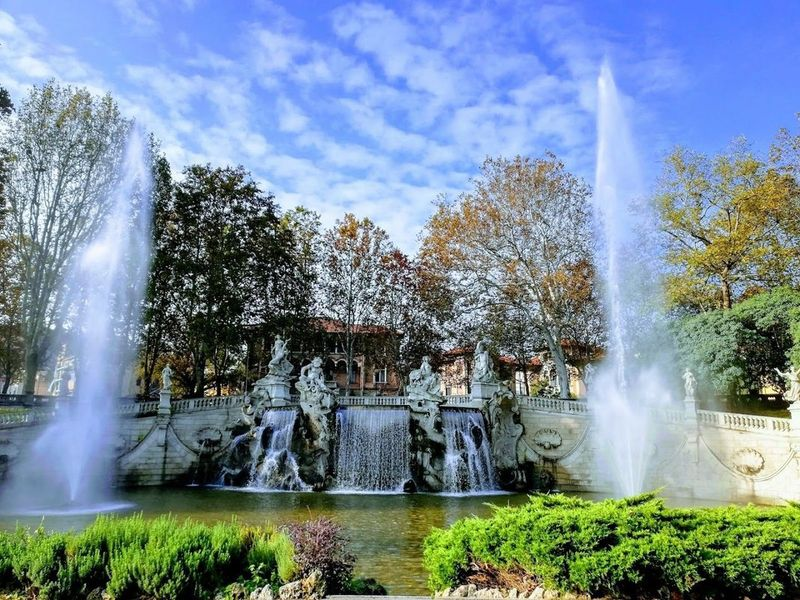
Fountain of the 12 Months
Fontana dei 12 Mesi, also known as the Fountain of the Months, is an impressive 19th-century monument located at the southern edge of Parco del Valentino. This opulent fountain was created for the Italian General Exposition of 1898 and is the only remaining architectural piece from that event. The fountain features a large oval basin with a cascading waterfall and is adorned with twelve statues representing each month of the year.
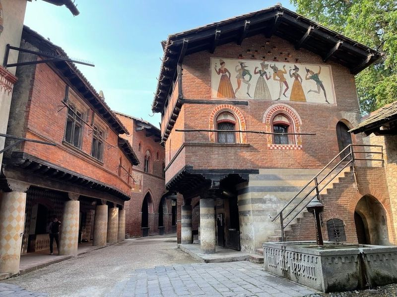
Borgo Medievale
Borgo Medievale is a charming reproduction of a medieval village nestled along the banks of the river Po. Built in the late 19th century, it offers visitors a glimpse into life during the Middle Ages. The village features houses, workshops, and even a fortress that guards the small community.
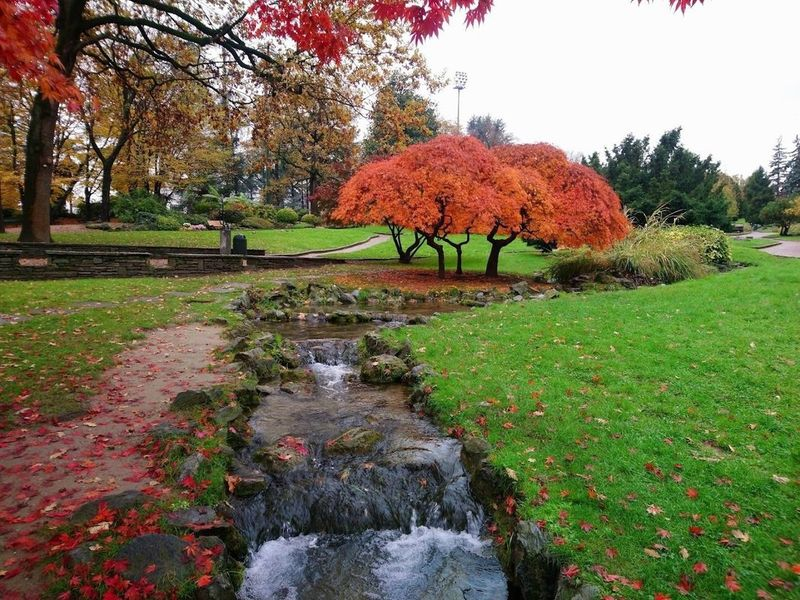
Parco del Valentino
Parco del Valentino is a historic park and castle with medieval origins located on the riverbank. It features historic trees, a rock garden, and the 18th century Botanical Garden. The park overlooks the Po River and sits at the foot of a hill, offering beautiful scenery. Additionally, it houses the Castle, one of the Royal Residences, and a Medieval Village. This landmark park is known for its rich history and picturesque surroundings.
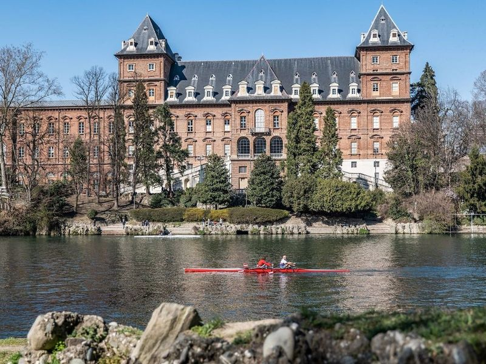
Castello del Valentino
Nestled within the picturesque Parco del Valentino, Castello del Valentino is a 17th-century French chateau that captures the essence of Baroque architecture. Originally commissioned by Christine of France, this enchanting castle showcases a romantic facade that feels straight out of a fairy tale. Today, it serves as the Faculty of Architecture for Turin's university, blending historical grandeur with modern education.
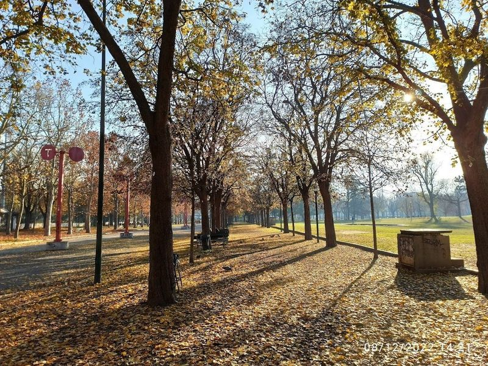
Parco Ruffini
Parco Ruffini is a recreational haven that offers tree-lined paths, a children's train ride, sports arena, and skate ramp. It is one of the many green spaces in Turin, Italy. The park was created to provide greenery to the inhabitants of Pozzostrada and San Paolo. Visitors can enjoy various activities such as 5vs5 soccer, tennis, basketball, and more.
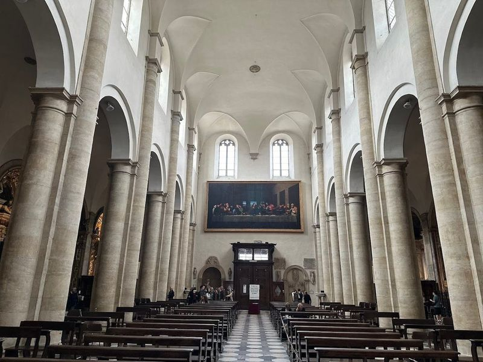
Cattedrale di San Giovanni Battista
Nestled near the majestic Palazzo Reale, the Cattedrale di San Giovanni Battista stands as a testament to both history and artistry. This cathedral is renowned for housing the Shroud of Turin, a linen cloth believed to be the burial shroud of Jesus Christ, which has sparked intrigue and debate over centuries.
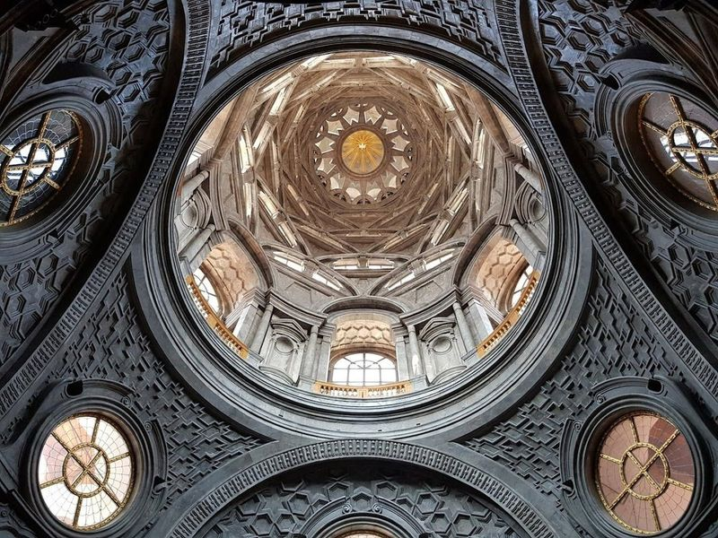
Sindone Chapel
The Cappella della Sacra Sindone, located within Turin Cathedral in Italy, is a Baroque chapel designed by Guarino Guarini in the 17th century to house the Shroud of Turin, believed to bear the image of Jesus. The chapel's interior boasts lavish decorations including frescoes and stucco work. Although it suffered damage from a fire in 1997, it is currently undergoing restoration.
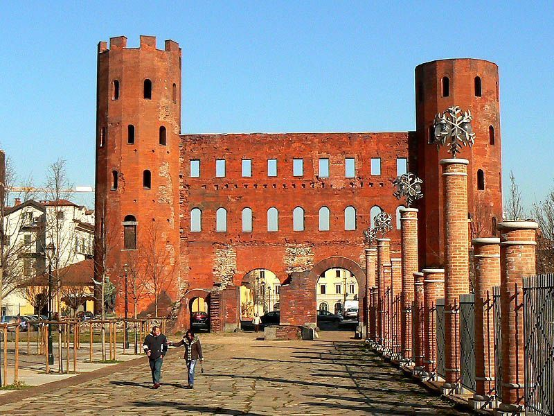
Palatine Gate
The Palatine Gate in Turin is an impressive Roman-era city gate with soaring towers, chariot entrances, and arched walkways. It provided access through the city walls from the north side and was intended for use by the Emperor and his entourage. The gate's size and structure are remarkable, featuring two towers, a central archway, Corinthian columns, and elaborate carvings. It is considered -preserved examples of Roman architecture in the city.
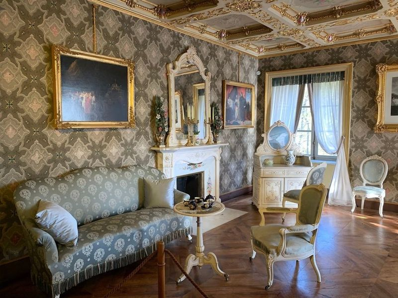
Castello de La Mandria
Nestled within the expansive 950,000 square meters of lush landscapes and architecture, Castello de La Mandria is a true gem commissioned by Carlo Emanuele II. Designed initially by Amedeo di Castellamonte and later transformed by Filippo Juvarra in the early 18th century, this royal residence boasts remarkable features such as the Great Gallery and the Church of St Hubert.
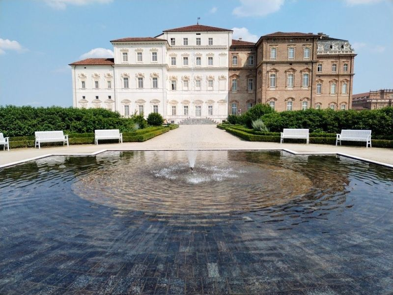
La Venaria Reale
La Venaria Reale, located about a forty-five-minute drive from Turin, is an enormous palace estate and part of the UNESCO World Heritage-designated Savoy royal residences. It is one of Italy's most popular museums and boasts a Baroque masterpiece designed by Filippo Juvarra. The vast structure underwent an ambitious restoration project twenty years ago, making it the largest of its kind in Europe.
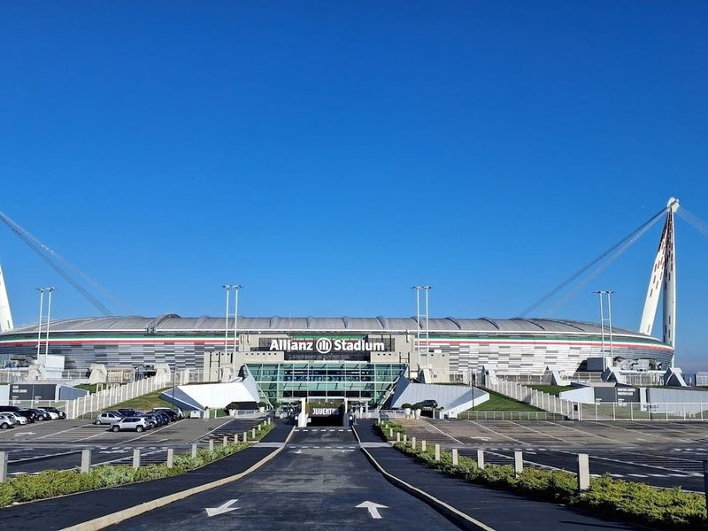
Allianz Stadium
Allianz Stadium, home to Juventus FC, is a modern all-seater stadium with a capacity of 41,000. It offers guided tours and houses a club museum for sports enthusiasts to explore the team's history. Conveniently located just 9 km from the Allianz Juventus Stadium, it is easily accessible from the nearest airport and Porta Susa station. The stadium is a must-visit for football fans, offering an immersive experience through museum visits and guided tours.
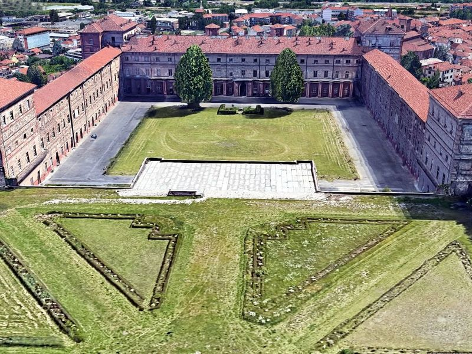
Castello Reale di Moncalieri
Castello Reale di Moncalieri is a historic hilltop palace in Moncalieri, Piedmont, Italy. Originally built as a fortress by Thomas of Savoy in the 12th century, it later became a ducal home and a favorite residence of Vittorio Amedeo III and Vittorio Emanuele. The castle features ornate rooms and landscaped gardens, offering guided tours to visitors.
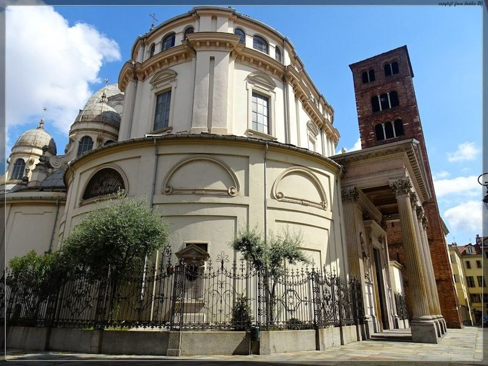
Santuario della Consolata
Nestled in the heart of Turin, the Santuario della Consolata stands as a testament to Baroque artistry and rich history. This Marian sanctuary, also known as the Church of the Virgin of Consolation, is one of the city's oldest churches, dating back to its origins in the 5th century. Visitors are greeted by an impressive classical portico that leads into a interior adorned with polychrome marble.
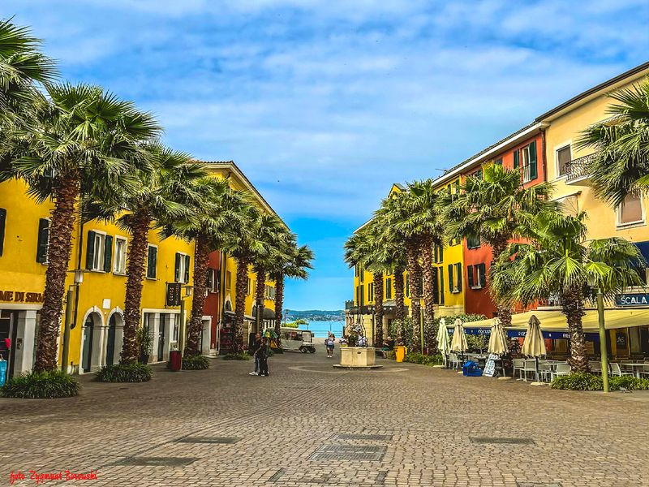
Piazza Castello
Piazza Castello is a central square in Turin surrounded by historic buildings such as the Royal Palace, Palazzo Madama, and the Royal Theatre. It is a hub for cultural events and gatherings. The site forms part of Piazza Castello's documented civic and cultural landscape within Turin, with archives and visitor information available from municipal or regional heritage authorities.
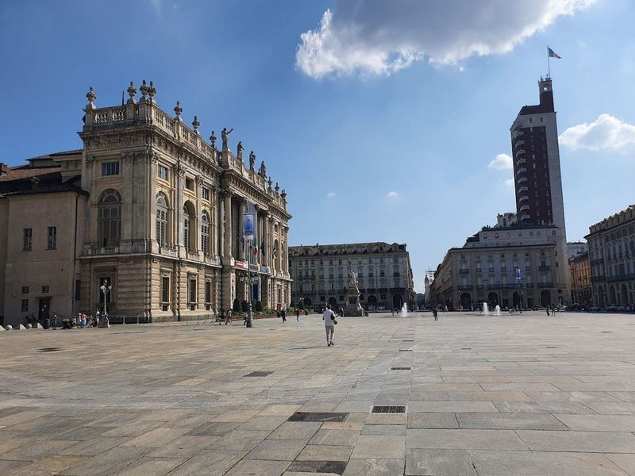
Palazzo Madama
Palazzo Madama on Piazza Castello was a Roman gate, medieval fortress, and later Savoy royal residence before becoming Turin's city museum of ancient and medieval art. Its baroque facade by Juvarra contrasts with the medieval tower behind it. Collections range from Roman sculpture to Renaissance painting and decorative arts displayed across four floors.
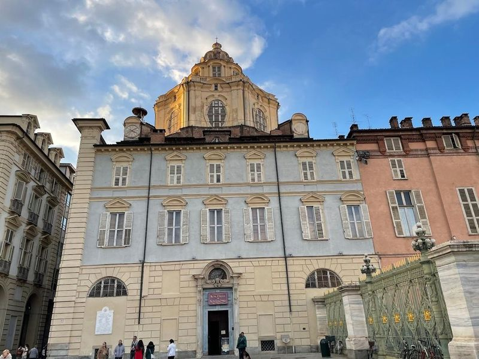
Chiesa di San Lorenzo
Real Chiesa di San Lorenzo is a octagonal Catholic church built in 1687, featuring baroque architecture, frescoes, statues, and a dome. It was originally conceived as a chapel for Palazzo Reale in the central Piazza Castello and designed by Guarini. The church's style reflects the influence of Borromini and showcases Guarini's innovative approach to form.
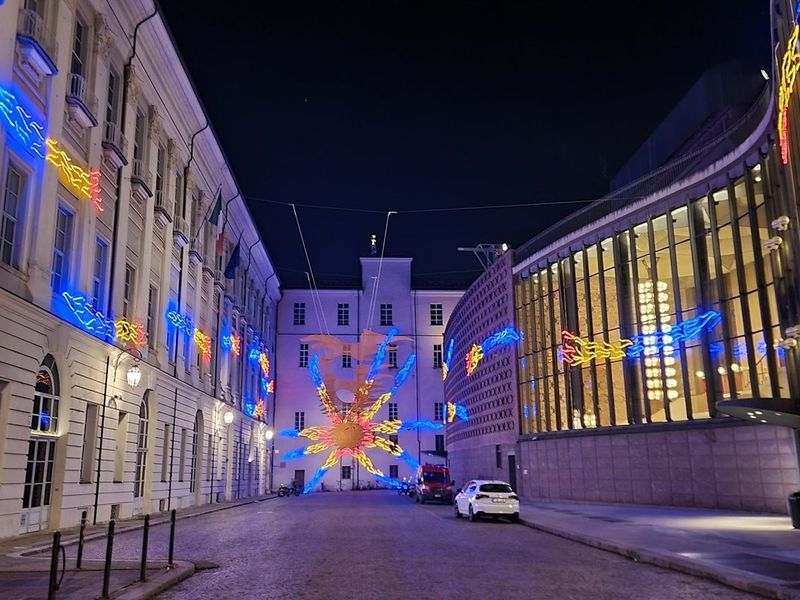
Teatro Regio di Torino
Teatro Regio di Torino is a grand opera house located in the heart of the city, staging full-scale productions from October to June. The building is part of the historic Piazza Castello and shares its space with other significant landmarks such as Biblioteca Reale and Armeria Reale. The opera house has a rich history dating back to the 18th century and offers a cultural experience that reflects the vibrant soul of Torino.
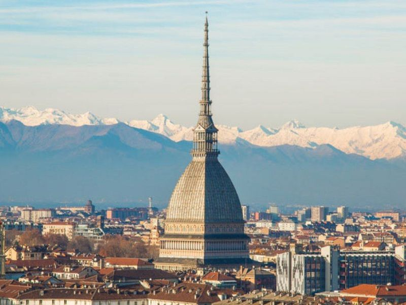
Mole Antonelliana
The National Museum of Cinema is located in the Mole Antonelliana, a 19th-century building that stands as a symbol of Turin. The museum offers an extensive collection showcasing the evolution of cinema, from pre-cinematic optical equipment to modern films and memorabilia. Visitors can explore different floors to learn about the history and techniques of filmmaking, view various sets, and engage in interactive experiences such as 3D simulations and reenacting movie scenes.
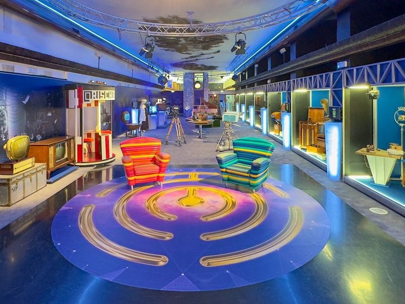
Museo della Radio e della Televisione Rai
The Museum of Radio and Television RAI, located in Turin, offers a fascinating journey through the history of Italian radio and TV. Despite its small size, the museum boasts an impressive collection of vintage TV and radio equipment from different eras. Visitors can explore interactive exhibits that showcase the evolution of communication and television technology. The museum is recommended for families, young kids, groups of friends, or solo travelers.
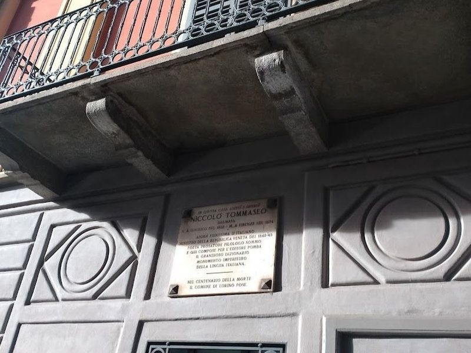
Casa Scaccabarozzi
Casa Scaccabarozzi, nicknamed the Fetta di Polenta for its narrow wedge shape, is a five-storey residential block on Corso San Maurizio designed by Alessandro Antonelli in 1840. The facade is only about one metre wide at one end, creating one of Turin's most unusual street silhouettes. The polychrome townhouse remains a private landmark of the Risorgimento-era city centre.
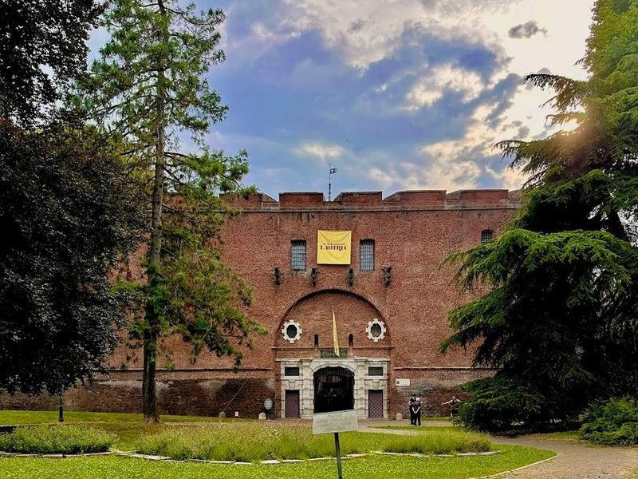
Mastio della Cittadella
The Mastio della Cittadella is the pentagonal brick keep at the centre of Turin's Parco della Citadella, built in the 1730s as part of the Savoy arsenal complex. The tower once guarded munitions workshops and barracks; it now anchors public gardens with the park zoo and lawns spreading around the former fortress ditch.
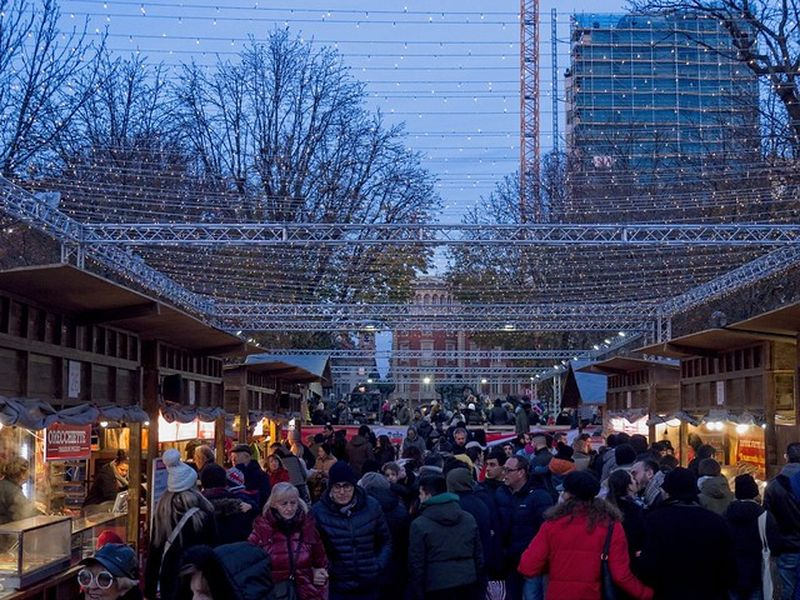
Piazza Solferino
Piazza Solferino is a tree-lined square in central Turin named for the 1859 battle and framed by 19th-century apartment blocks. The Alfieri monument and nearby cafés make it a regular meeting point between Porta Nuova station and the Po riverside. Trams cross the square on routes linking the historic centre with the San Salvario district.
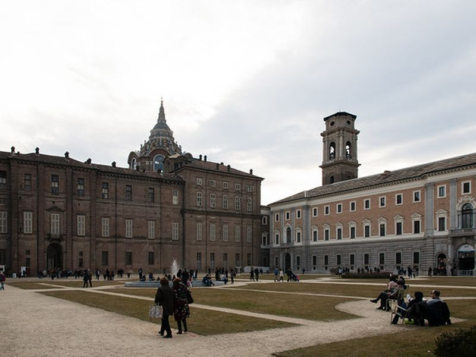
Giardini Reali di Torino
The Giardini Reali di Torino are the Royal Gardens of Turin, offering lush greenery, beautiful fountains, and a peaceful escape from the city's hustle and bustle. The site forms part of Giardini Reali di Torino's documented civic and cultural landscape within Turin, with archives and visitor information available from municipal or regional heritage authorities.
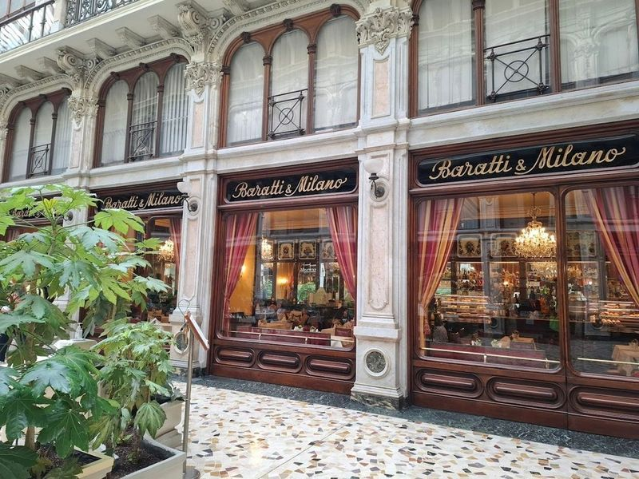
Galleria Subalpina
Galleria Subalpina, located at the end of Via Roma in Turin, is a glass-roofed shopping arcade that exudes opulence and charm. Designed in the Art Nouveau style by Pietro Carrera, it boasts intricate ironwork and decorative mosaics, creating a vibrant atmosphere.
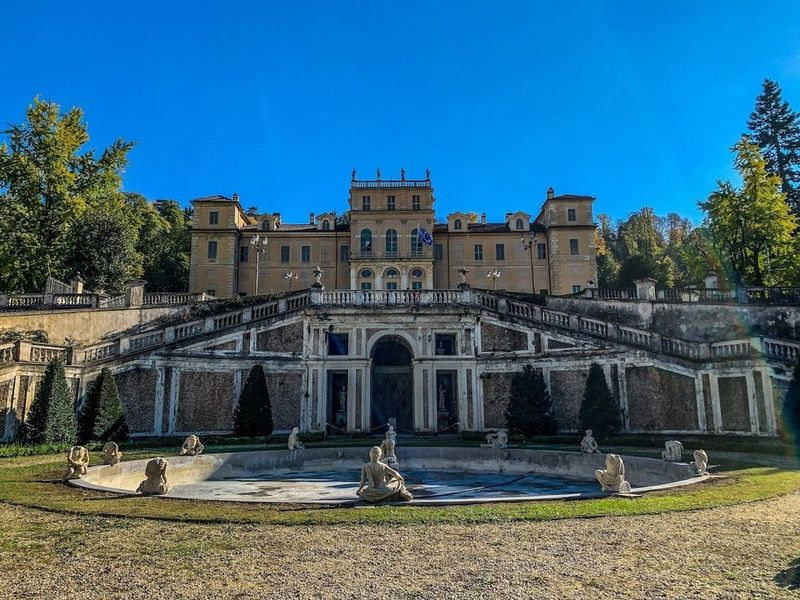
Villa della Regina
Villa della Regina is a 17th-century royal palace located on the hills surrounding Turin. It was originally built as a vineyard and gardens complex for Prince-Cardinal Maurice of Savoy, but later expanded and adorned by Luisa Ludovica of Savoy, who made it her personal residence. The villa has been home to several Savoy queens over the centuries. Its Baroque beauty is complemented by frescoes, paintings, and Chinese cabinets.